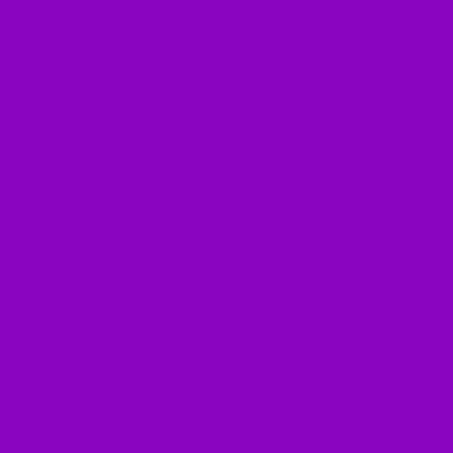

LOGO DO NUBANK
E SEU SIGNIFICADO.
A logo do Nubank marcou não apenas a história da empresa, mas as dos clientes também. Ela virou símbolo da possibilidade de uma vida melhor, com relações mais justas e humanas entre pessoas e empresas. O logo do Nubank tem vários significados:
Curvas suaves
As curvas que formam o "nu" são mais suaves e menos quadradas, representando o lado humano.
Fitas viradas
As duas fitas viradas representam um movimento que não para nunca, simbolizando a fluidez do negócio.
Tom roxo
A cor roxa é mais escura e o preenchimento dá às letras um peso maior, deixando a leitura mais acessível. O roxo combina a calma do azul com a energia do vermelho, refletindo o equilíbrio entre seriedade e inovação.
Tipografia
A tipografia utilizada na logo é moderna e acessível, destinada a refletir a transparência e simplicidade que o Nubank busca em todos os seus serviços.
